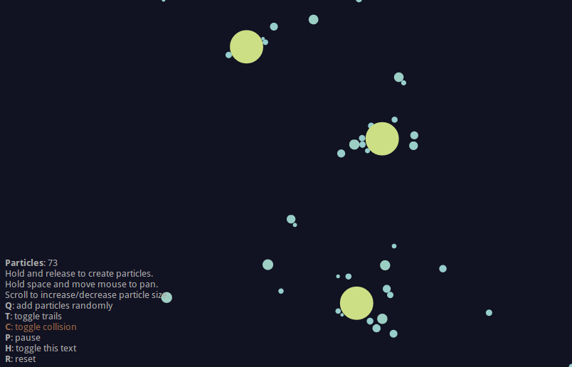
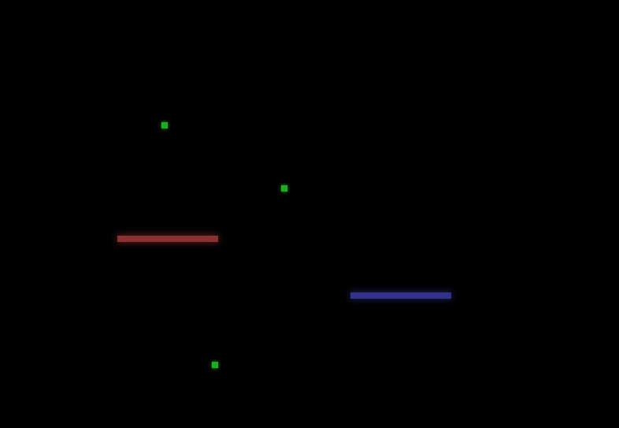
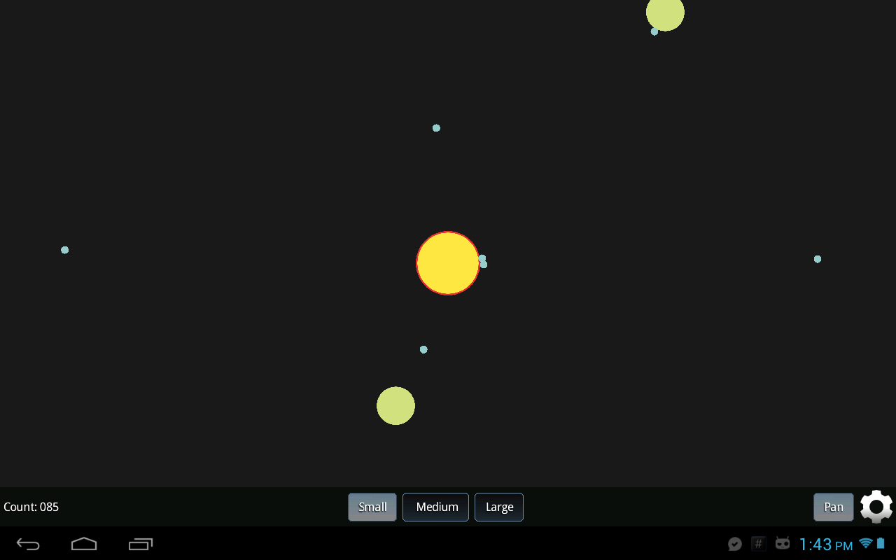
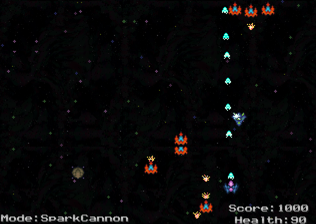

Andrés Villarreal

Software Developer
I'm a pragmatic web developer and software engineer. I'm passionate about the web, and the open source ecosystem.
In my spare time, I enjoy making and listening to music, playing old video games, and working on my own side-projects.
CV
Personal Information
- Name
- Andrés Villarreal Cordero
- Nationality
- Costa Rican
- Address
- San Pablo, Heredia, Costa Rica
- Email Address
- andres@villarreal.co.cr
Languages
Spanish (first language), and English (advanced).
Professional Experience
Growth Acceleration Partners: 2013 - current
At Growth Acceleration Partners, I have contributed mostly to developing and maintaining existing web applications, using the LAMP stack.
Academic Preparation
CENFOTEC: 2014 - current
Software Engineering Diploma
Colegio Yurusti: Graduated on 2010
High School Diploma
Skills
I am skilled in
- Working, communicating, and assisting my teammates in order to develop high quality software solutions.
-
Developing web applications using
technologies such as:
- HTML
- CSS: Sass, Bootstrap, Foundation
- Client-side JavaScript: AngularJS, jQuery
- Server-side JavaScript: Express, Meteor
- PHP: Symfony, Zend Framework, Laravel, Doctrine
- Python: Django
- Relational Databases: MySQL, sqlite
-
Leveraging software configuration, development, and other tools such as:
- Source Control: Git, Subversion
- Automation and Deployment: Grunt, Capistrano, Composer
- IDEs / Editors: Vim, Eclipse, IntelliJ Idea, Netbeans, PyCharm
I want to improve my skills in
- Linux System administration
- Software development in Go
- Machine Learning
- NoSQL databases such as MongoDB and CouchDB
Projects
 glxy  snake  GLXY (for Android)  pixelshooterLinks
Find me in places around the Internet!
- Pejibaye Blog - here I blog about my favorite technologies
- GitHub - most of my open source software projects are hosted at GitHub